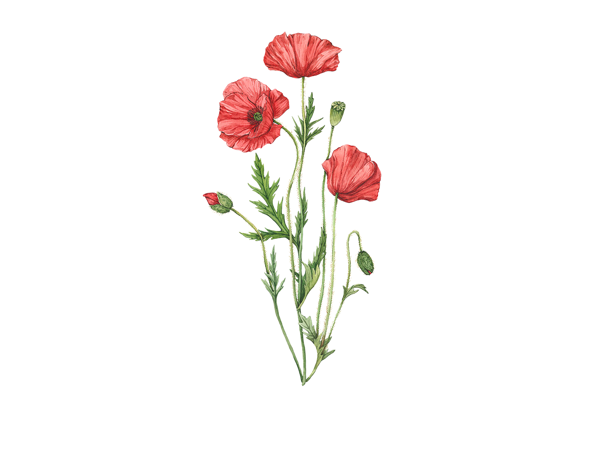

Medicinal Plants

Poppy
Opium is extracted from Opium Poppy seeds
The flower can be used as a painkiller for soothing pains and aches.

Jasmine
Rich in antioxidents that interact with gastrointestinal enzuymes to promote better bowel function.
Can have sedative and relaxing effects when consumed as a tea or in oil form.

Calendula
Usually used as a topical treatment for skin irritations and wounds.
Rarely ingested and if it is, it's in small quanities for homeopathic purposes.

Lavender
Lavender essential oil is widely used for its aroma therapy benefits.
Lavender for aroma therapy has been shown to help anxiety, insomnia, and stress.